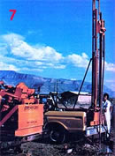

Would you like to live in the country... provide a vital yet economically priced service...work as little as a week...and make over $26.000 a year? Then consider this unique chance to get into...
Folks, if you've been waiting for us to come up with the perfect, rural-based, "be your own boss" business-one that might be right up your alley-be sure you give this article a darn good looking over . . . because we've discovered an inexpensive way to get into a one-person well drilling business that may just be one of the best home enterprises ever!
Now, anyone who has ever seen a conventional drilling machine will probably feel it's unlikely that an individual could set him- or herself up in this business for a reasonable investment . . . and there's good reason for such skepticism! After all, the rigs most well drillers use are massive ten-wheeled trucks-loaded with 30-foot towers, giant engines, and heavy equipment-that can cost as much as $300,000!
But suppose (just suppose) that you could purchase a completely functional, hydraulicpowered, domestic water well drilling rig that would fit on a small trailer or the back of a pickup truck, be capable of boring a hole eight inches in diameter and 600 feet deep . . . and yet cost a relatively affordable $7,500? Furthermore, suppose that the fellows who made such a miracle earth piercer were willing to provide a two-day training course in using the device (even if you weren't at all sure that you wanted to buy it)?
Sounds pretty good, huh? Especially when you consider that owning an inexpensive well drilling machine would enable you to charge less for your services than the "big boys" do (thus giving your customers a moneysaving break) . . . yet still clear more profit-and get more customers-than does the competition!
Well, it's all true! A couple of tool-happy New Mexicans named Gailard "Skip" Piper and Roy Proctor have-entirely on their own-invented the Piper Hydro EXPLORER 2000: a unique well drilling ma- chine that actually accomplishes everything described above! And MOTHER can assure you that the small but hardy :rig does, indeed, do the job . . .because we've seen it perform!
Before we can describe the specific functional virtues of the EXPLORER 12000, we'll have to explain a bit about well drilling in general. To begin with, there are two principal techniques used for boring domestic water holes: cable and rotary drilling. Cable (or "pounder") rigs hammer out a hole by repeatedly dropping a 1,500-pound "tool string" onto an earth-cutting bit. Any driller using such a rig must stop every few feet and - with water and a long bailing bucket -clean out the bottom of the hole. You might imagine that all the required pounding and bailing would make for some pretty slow progress . . . and, in fact, cable rigs can take up to two weeks to drill a household well.
Rotary drills, on the other hand, use a highpowered engine that screws a cutting bit into the earth . . . while water is continuously flushed down through the hollow sections of drilling pipe (or "drill stems"), and out through holes in the bit. The liquid washes the cuttings to the surface to clean out the hole. Any suspended particles are then allowed to settle out, after which a second engine (the mud pump) cycles the water to the bottom of the well again. Rotary drilling machines are much more expensive than cable rigs (they cost $200,000 or $300,000, whereas new pounder setups go for around $80,000), but the more costly devices are also powerful enough to bore a household well in a day or two.
Both rotary and cable drill operators have to charge a considerable price for their services: The first group are forced to do so because their equipment is so costly, and the second because theirs is so slow. The rotary-driven EXPLORER 2000, though, can work rapidly enough to -as Skip Piper says-"wax those cable pounders" . . . yet its purchase price undercuts that of other rotary rigs by a factor of 30!
What's the secret of Roy and Skip's rig? Well, its main asset is, simply enough, an economy of scale. Most rotary machines are-in addition to their water-finding jobs-designed to have the capability to drill oil or industrial wells that are over 2,400 feet deep! Every feature of such a machine must be massive: It uses a pair of large, fuel-guzzling engines, a 30- to 60 foot tall drilling tower, drill stems that often can't be raised without a crane, massive pumps to circulate huge quantities of water, etc. (In fact, the rig's operators may need to own one extra truck just to carry the drill stems . . . another for toting essential spare parts . . . and yet a third to haul the necessary water! )
Obviously, using such a large-capacity drill to cut a 100- or 200-foot domestic well is a clear case of mechanical overkill. So Skip and Roy are able to save a great deal of expense and energy simply by using a machine whose size more nearly matches the demands of the specific job. As an example, the EXPLORER 2000's tower is only 14 feet tall-and the drill stems 10 feet long-so all of the portable equipment can actually be lifted by hand. The drilling engine also uses much less power than do those of the big rigs . . . the mud pump needs to cycle a great deal less water . . . and the body of the rig is small and, therefore, less expensive to build.
The two inventors have also devised several improvements that further increase the efficiency of their scaled-down rig. For instance, they added a wiper paddle, at a point just above the drill bit, that-by packing the sides of the hole as the bit descends-enables a surprisingly modest amount of water to clear the bored opening. They've also incorporated a labor-saving system for placing one section of drill stem right on top of another as the well is bored (most rotary rig operators have to raise alt their buried drill stems every time they want to add a new section!). Not only that, but the two tinkering Southwesterners have created a uniquely effective hydraulic system . . . which enables the 2000 to achieve extra drilling torque with its small engine!
The end result is a machine that appears downright flimsy when compared to big well drilling devices. "In fact," jokes Skip Piper, "when I first started drilling, I had to charge less than the other guys because my machine looked so ridiculous! " But punyappearing or not, the EXPLORER 2000 works so well that, these days, the joke's on the other foot . . . many competing Alamogordo drillers have had to lower their rates to match Piper's more closely. (One such hole cutter recently complained to Skip that the EXPLORER has "made the whole business so simple there's no money in it anymore".)
Should you sign up to train at Piper Hydro in Alamogordo (the $100 fee for a two-day session is refunded if you buy a rig), Skip and Roy will, of course, give you plenty of field instruction in using the EXPLORER 2000. They'll also make darn sure that you have a good understanding of such basics as never running the drill unless you've first made sure that water is circulating through the well hole (if it isn't doing so, rock and mud segments can accumulate at the base of the hole and permanently trap your expensive drill bit! ) .
Still, the two New Mexicans will not be able to teach you everything about the trade, because-make no mistake about it-a lot of well drilling expertise has to come from experience. Only a practiced "carrier" (or driller) can recognize the stem vibration that means his or her bit is cutting through gravel . . . and spot the color and texture changes in the recirculating water that indicate whether the drill is boring through rock, sand, or limestone. There's also a lot of know-how associated with such trade arts as using bentonite ("driller's mud") to seal the sides of a collapsing hole, finding the best available water-bearing layer, and installing pumps. But the Piper crew will happily advise you after you've finished training-as well as during the instruction period-and can also help you obtain useful drilling reference manuals.
If you do set yourself up in business with Piper Hydro's EXPLORER 2000 (or with the bigger 3000 model described in the chart that accompanies this article), you'll probably soon be in the enviable position of being able to charge less-yet make moremoney than your competition can! Skip, for example, charges $6.50 a foot for four-inchdiameter wells, while most of his Alamogordo area competition asks $8.00 a foot. (Before Piper came along, the local prices often went as high as $12.50 a foot!) Yet-while the other drillers have so many loan, insurance, upkeep, operating, and labor expenses that they operate on a fairly slim profit margin-Skip clears $5.00 a foot . . . after expenses!
Now stop and think about that figure for a minute. True, standard well drilling charges do vary widely around the country (our research shows that such costs range from as little as $6.00 a foot to over $20.00) . In addition, the depth of wells will differ from one area to another (with the average depth being around 200 feet). But if you can make the same margin of profit-where you live-that Piper does, then every time you spend a day drilling a 100-foot well, you'll clear $500! If you drib only one such well a week, you'll earn $26,000 a year!
So now you know why we say well drilling with the EXPLORER 2000 can be a great home business! But-before you hop on a plane to Alamogordo- check out your area and see just how open (or closed) the well drilling market is.
How can you find such information? Skip says, "Simply phone a few local drillers, ask what they charge to drill a well, and then find out if they can do it tomorrow . . . if they can't, there's probably plenty of business around."
Roy, though, likes to add some additional words of advice: "First," he says, "find out whether your area is experi
encing some domestic growth. For instance, the outskirts of expanding cities, or rural land that's being split into smaller parcels, will provide good possibilities for a new drilling business. Then call up your County Extension Agent or Department of Water Resources and learn the local ground water conditions . . . because-who knows?-you just might live in an area where people can't find water unless they drill to tremendous depths. Better yet, phone a local well driller and ask about the 'worst case' that he or she has encountered. You can be sure that conditions can't possibly be any more discouraging than what that expert will describe!"
Roy and Skip also realize that you may be interested in their rigs even if you don't plan to become a professional driller. In fact, the two men recently developed the small EXPLORER 200 (which costs less money than many people would likely have to pay someone else to drill a well) just to suit folks who want to bore only one or two water holes for themselves or their neighbors.
Both fellows are primarily interested, though, in setting things straight-in a profession that they think often overcharges its customers-by helping individuals get into fulltime well work. So if you're interested in becoming a well borer, check out your local market, then write off to Piper Hydro and consider spending a few days in the of "Land of Enchantment". After all, no home business idea is right for everyone . . . but, folks, this one is bound to suit some of MOTHER's readers mighty well!
EDITOR'S NOTE: For more information on Piper Hydro's water well drilling equipment, send $3.50 (refundable with purchase) to Piper Hydro Drilling, Dept. TMEN, P.O. Box 237, Alamogordo, New Mexico 88310.
|
[1] Piper Hydro's Explorer 21N well drilling apparatus. |
[2] Two 2000 well shallow ditches and settling holes are dug-- a mud pump set in place-before the drilling of a new well is begun. |
[3] A continuous stream of water is pumped through the drill bit. Note the innovative wiper paddle just above the earth-cutting bit. |
|
[4] Ski' riper, the coinventor of the Explorer 21N. |
(5) Roy Proctor, Skip's part- watches as a trainee connects two drill stems. |
[6] A close-up of the Explorer 2000's hydraulic system and rotary table. The red hose carries circulating water from the mud pump to the drill stem. |
|
 [7] Skip dent constrates the abilities of the Explorer 2011 while a 3111 (foreground) sits idly by. In the background, you can see the Sacramento Mountains. |
|
|